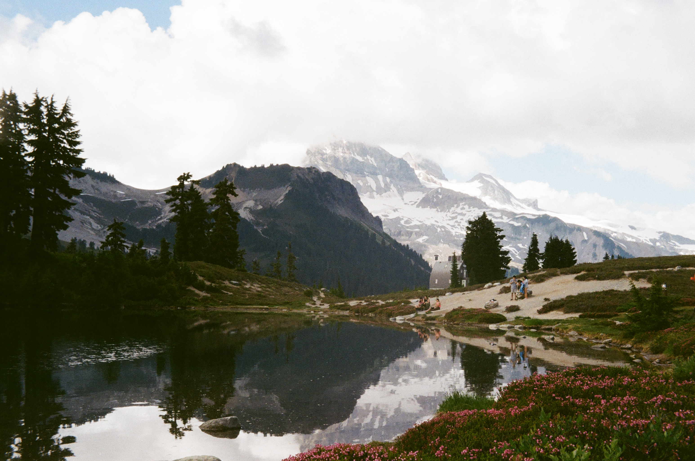
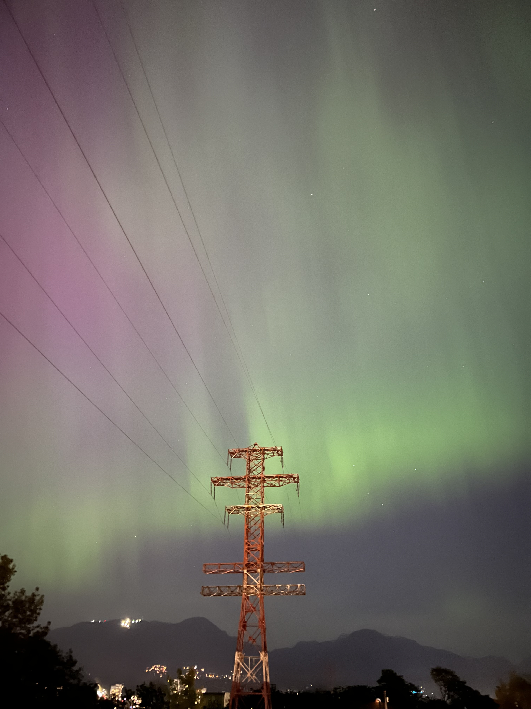

01 — About
Orbiting multiple
disciplines at once.
I'm a Computer Engineering student currently considering a pivot into Geological Engineering — because rocks and circuits have more in common than you'd think. Both are systems that follow rules, break in interesting ways, and reward careful observation.
My academic path has led me toward robotics and embedded systems, where I love the challenge of making physical hardware respond intelligently to the world. I'm equally drawn to visual representation of complex numbers and topics in fields such as GIS, cartography, and visual statistics
When I'm not at school, I'm exploring the world by hiking, running, dancing, traveling and watching for wildlife. My love for exploration and the unknown is what originally sparked my passion for pysical geography, planetary science and astronomy.

